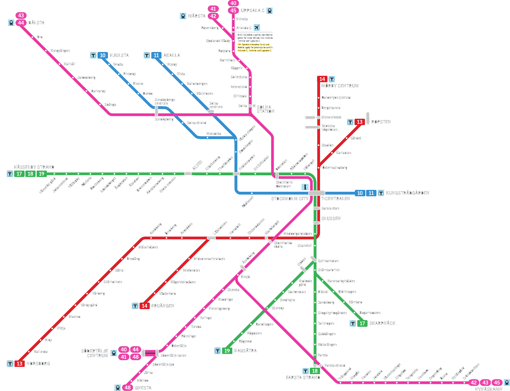
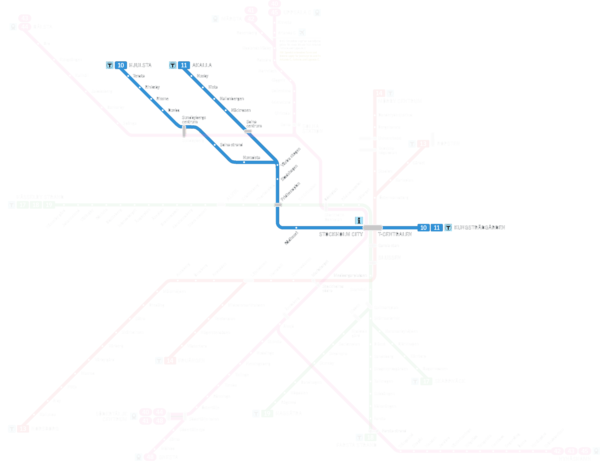
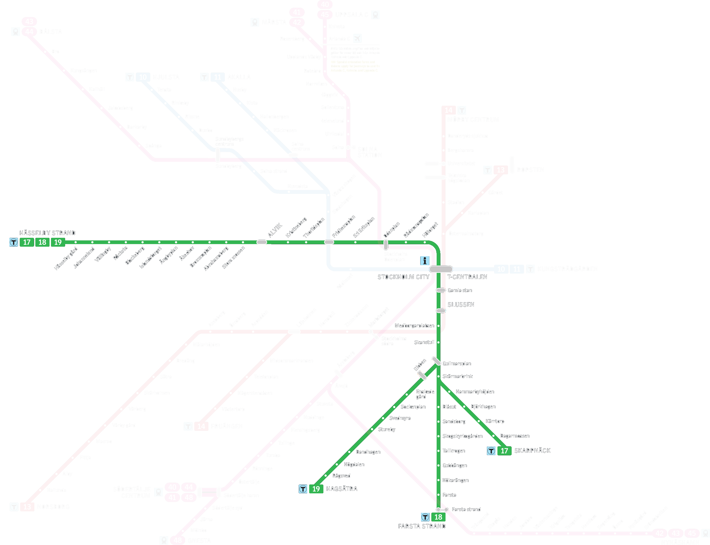
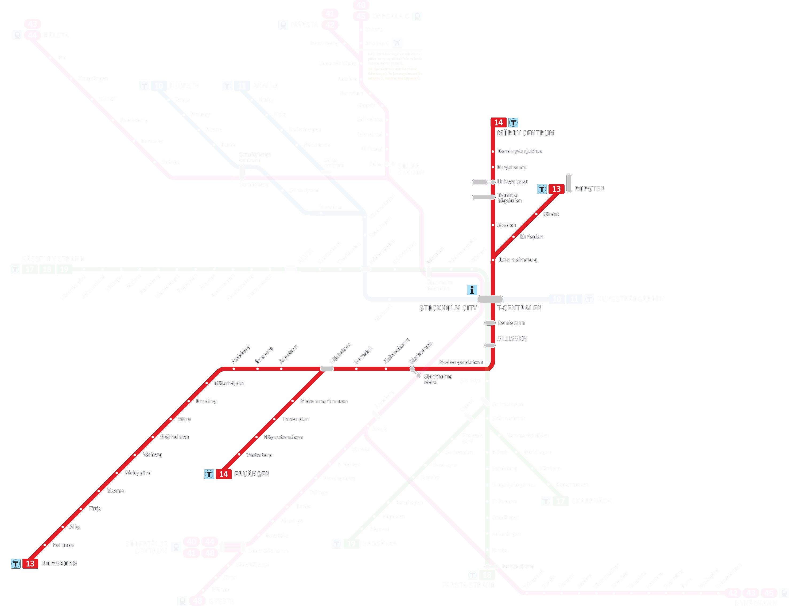
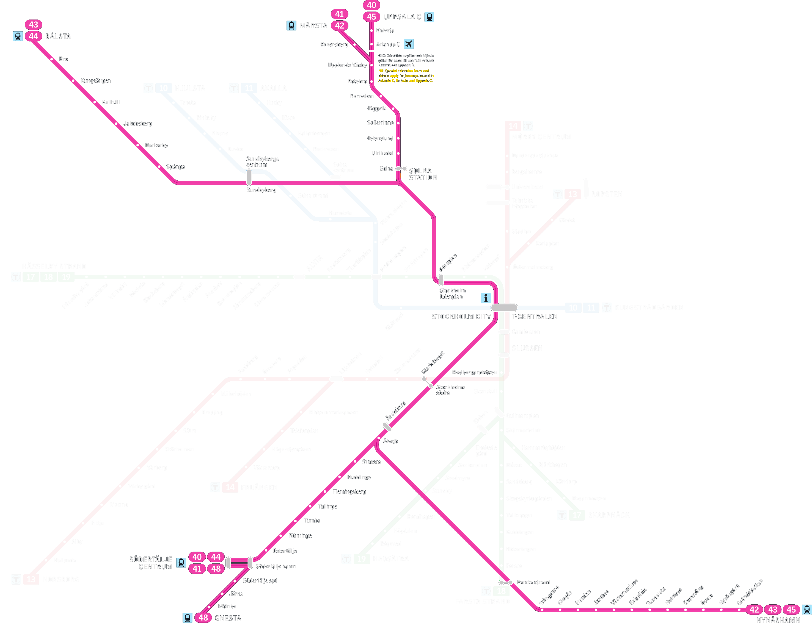

SL
KARTAN
v 0.1a
GET_POS
T-Centralen
Fridhemsplan
10 11
17 18 19
Kungsträdgården
10 11
Rådhuset
10 11
Stadshagen
10 11
Västra Skogen
10 11
Huvudsta
10 11
Solna Strand
10 11
Sundbyberg Centrum
10
43 44
Solna Centrum
10
43 44
Duvbo
10 11
Rissne
10 11
Rinkeby
10 11
Tensta
10 11
Hjulsta
10 11
Näckrosen
11
Hallonbergen
11
Kista
11
Husby
11
Akalla
11
Norsborg
13
Hallunda
13
Alby
13
Fittja
13
Masmo
13
Vårby Gård
13
Vårberg
13
Skärholmen
13
Sätra
13
Bredäng
13
Mälarhöjden
13
Axelsberg
13
Örnsberg
13
Aspudden
13
Liljeholmen
13 14
Hornstull
13 14
Zinkensdamm
13 14
Mariatorget
13 14
40 - 48
Slussen
13 14
17 18 19
Gamla Stan
13 14
17 18 19
Östermalmstorg
13 14
Skarpnäck
17
Bagarmossen
17
Kärrtorp
17
Björkhagen
17
Hammarbyhöjden
17
Skärmarbrink
17
Gullmarsplan
17 18 19
Skanstull
17 18 19
Medborgarplatsen
17 18 19
Hötorget
17 18 19
Rådmansgatan
17 18 19
Odenplan
17 18 19
40 - 48
S:t Eriksplan
17 18 19
Thorildsplan
17 18 19
Kristineberg
17 18 19
Alvik
17 18 19
Stora Mossen
17 18 19
Abrahamsberg
17 18 19
Brommaplan
17 18 19
Åkeshov
17 18 19
Ängbyplan
17 18 19
Islandstorget
17 18 19
Blackeberg
17 18 19
Råcksta
17 18 19
Vällingby
17 18 19
Johannelund
17 18 19
Hässelby Gård
17 18 19
Farsta Strand
18
42 43 45
Farsta
18
Hökarängen
18
Gubbängen
18
Tallkrogen
18
Skogskyrkogården
18
Sandsborg
18
Blåsut
18
Hagsätra
19
Rågsved
19
Högdalen
19
Bandhagen
19
Stureby
19
Svedmyra
19
Sockenplan
19
Enskede Gård
19
Globen
19
Uppsala Central
40 45
Knivsta
40 45
Arlanda
40 45
Upplands Väsby
40 41 42 45
Rotebro
40 41 42 45
Norrviken
40 41 42 45
Häggvik
40 41 42 45
Sollentuna
40 41 42 45
Helenelund
40 41 42 45
Ulriksdal
40 41 42 45
Solna
40 41 42 45
Stockholm Södra
40 - 48
13 14
Årstaberg
40 - 48
Älvsjö
40 - 48
Stuvsta
40 41 44 48
Huddinge
40 41 44 48
Flemmingsberg
40 41 44 48
Tullinge
40 41 44 48
Tumba
40 41 44 48
Rönninge
40 41 44 48
Östertälje
40 41 44 48
Södertälje Hamn
40 41 44 48
Södertälje Centrum
40 41 44 48
Trångsund
42 43 45
Skogås
42 43 45
Handen
42 43 45
Jordbro
42 43 45
Västerhaninge
42 43 45
Krigslida
42 43 45
Tungelsta
42 43 45
Hemforsa
42 43 45
Segersäng
42 43 45
Ösmo
42 43 45
Nynäsgård
42 43 45
Gröndalsviken
42 43 45
Södertälje Syd
48
Järna
48
Mölnbo
48
Gnesta
48
Märsta
41 42
Rosersberg
41 42
Bålsta
43 44
Bro
43 44
Kungsängen
43 44
Kallhäll
43 44
Jakobsberg
43 44
Barkaby
43 44
Spånga
43 44
Tunnelbana
Metro
10
11
Blå linjen
Blue Line
13
14
Röda linjen
Red Line
17
18
19
Gröna linjen
Green Line
Pendeltåg
Commuter rail
40
41
42
43
44
45
48
    